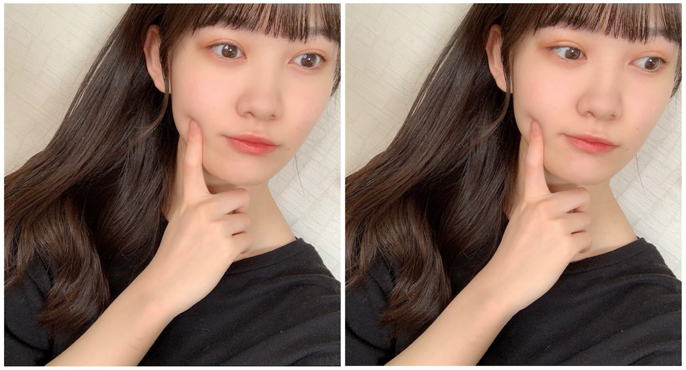
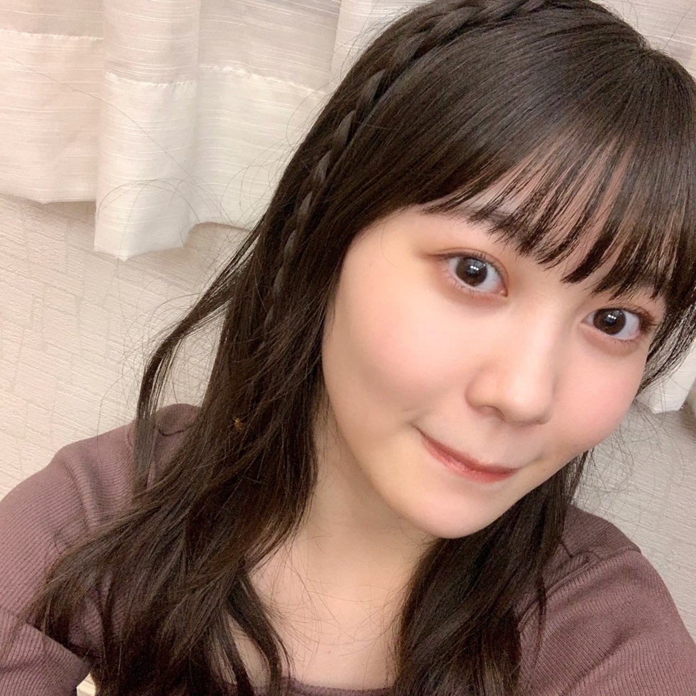
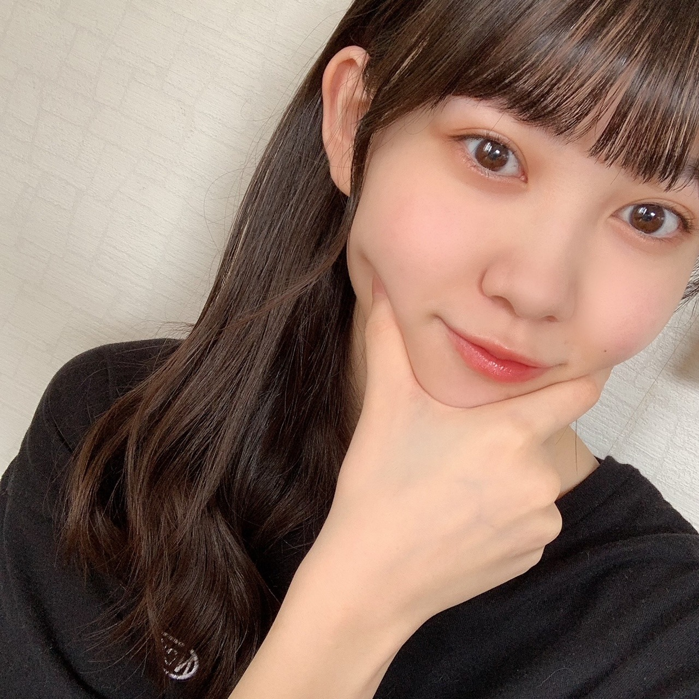
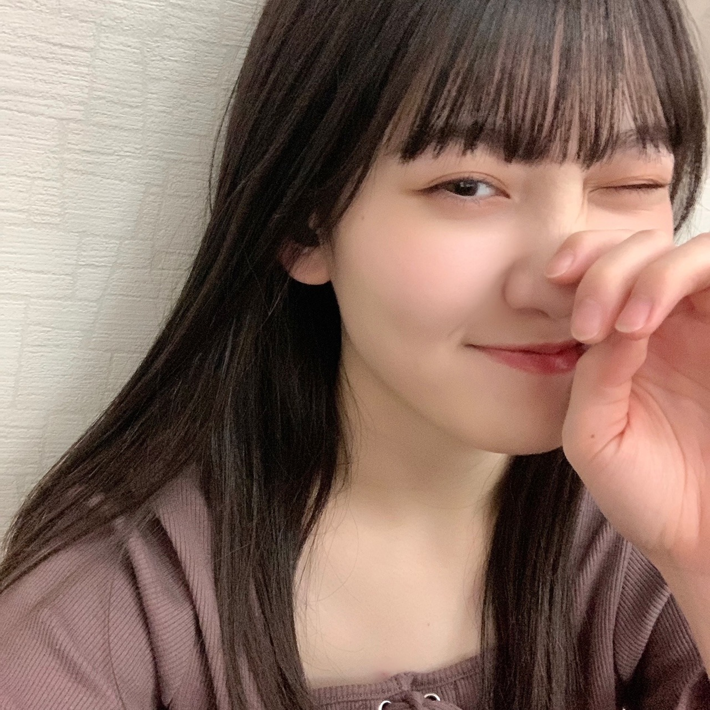

2020/0927Sunよそ見 松尾美佑
日曜日です☀︎
皆さん何してますか？？
私は明日小さなテストがあるんですけど、
もうちょこっとだけよそ見して
日曜日を楽しみます¨̮
千葉県出身
高校2年生
16歳の
松尾美佑です

よそ見中
最近ほっぺに指を突き刺しがち
我が家にはきなこちゃんという猫ちゃんが居るんです
過去のブログに何回か写真を載せたことがあるんですけど、
とっても可愛いスコティッシュフォールドちゃんです。
呼び方はきなこさんです。
きなこさんは小さな時から家の中でかくれんぼを開催する事が多くて、
昨日も どこだどこだ( Ꙭ) となりました
凄く上手なんです、隠れるの。
昨日のかくれんぼの発見場所は私の枕の上です。
すやすや寝てました¨̮
最近のゆる〜いお話でしたっ
ちゃんちゃんっ

みつあみ
今日の
乃木坂46の「の」
に私が登場させて頂きます！
私はものすごい人見知りで、
この日初めて岩本蓮加さんとお話をする事に
本っ当に緊張していたんです。
でも、
気付いたら素で私は楽しんでいました。
時間が一瞬に感じるくらい、もっとお話していたいな と本気で思いました
先輩と2人でお話をする事自体がこの日初めてで、不安が沢山でしたが
楽しさの勝ちでした！！
皆さんにも楽しい気持ちが届いたらいいなと思います¨̮
是非聴いてくださったら嬉しいです！

〜お返事〜
✽ もし行けるとしたら過去と未来どっちに行きたいですか？
未来が気になったりもしますが、見ちゃったら未来が変わっちゃうかもなので、
自分が覚えてないくらい小さい時の自分を覗き見しに行ってみたいですᕕ( ᐛ )ᕗ
✽ 美佑ちゃんはどういう系の本とか映画が好きなんですか？？
ハッピーエンドも大好きなんですけど、読んだり見終わった後にしばらくモヤモヤと考えさせられたり、ちょっと怖い 新しい考え方に出会えたりするものも好きです
✽ 美佑ちゃんに質問です！
えびは好き？？
最近ちょこっと好きになりました！
✽ 質問です！
髪の毛は染めた事ありますか？？茶色く見える時と黒く見える時があるので地毛なのかなぁ...？と気になってました!!
染めたことないです！
明るい時間に写真撮ると凄く茶色く見えたり、白い服を着てとると暗く見えたり、面白いです！
9月23日
寺田蘭世さん、お誕生日おめでとうございます！
ブログのお写真がいつもオシャレで素敵でしばらく写真を眺めさせて頂いています。
寺田蘭世さんの選ぶ言葉やお洋服がかっこよくて大好きです。
素敵な1年になりますように、願っています！
そして、今日9月27日
中村麗乃さん、お誕生日おめでとうございます！
中村麗乃さんの女の子の憧れが詰まっているような所が本当に大好きです。
お話できたら嬉しいです！
素敵な1年をお祈りしてます！！
みくにちゃんもおめでとうˊᵕˋ
(日向坂46さん)
明日は〜〜〜
なお〜〜〜〜〜〜〜〜〜〜
バナナミルクは美味しいよ。
次の私のブログの日はもう10月になっているらしいですよ。
早すぎます。
でも10月も好きです。
次は10月に会いましょう〜
ミュウでした¨̮
ばいっっっっっっっっ( Ꙭ )/''


PROFILE
新4期生リレー
202104
| SUN | MON | TUE | WED | THU | FRI | SAT |
|---|---|---|---|---|---|---|
| 1 | 2 | 3 | ||||
| 4 | 5 | 6 | 7 | 8 | 9 | 10 |
| 11 | 12 | 13 | 14 | 15 | 16 | 17 |
| 18 | 19 | 20 | 21 | 22 | 23 | 24 |
| 25 | 26 | 27 | 28 | 29 | 30 | |

コメント(220)
ミュウしか
乃木恋で彼氏イベント始まったねー！！
最初頑張ったから3位とかだったのに
周りがすごすぎてもう20位とかだよ〜(>︿<｡)
家のルールでゲームに課金するのダメだから
第23期彼氏になれるか不安...
でも最初の彼氏イベントくらいは頑張りたいし
できることなら最初からずっと彼氏なれてるって
言えるようになりたいから頑張るね〜☺︎
前回のブログへのコメントでも書いたけど
今日は｢乃木坂46の『の』｣の日だね！
れんたんとみゆりんのお話聞くの
とってもとっても楽しみ！！
私の住んでる地域は来週の土曜日に放送だから
まだ聞けないけど楽しみにしてる！！
実は来週の土曜日学校の行事で
半日かけて30kmくらい走るから
へとへとになってしまうと思うけど
みゆりんの声を聞くのを楽しみに
頑張って走るね！！
✂︎- - - - - - - -キリトリ- - - - - - - - - - -✂︎
２枚目の写真！！
みつあみだぁ〜
私今三つ編みしてるからなんか嬉しい☺︎
どの写真もやっぱり可愛い(⑉• •⑉)❤︎
大好きすぎるよ
✂︎- - - - - - - -キリトリ- - - - - - - - - - -✂︎
また書きすぎちゃった笑
毎回毎回こんな長いコメント読んでくれてたら
とっても嬉しいけど申し訳なくなってくるなぁ笑
最後に質問！
✽乃木坂46の卒業メンバーで尊敬している人はいる？？
✽毎回長いコメントでも大丈夫？
今日も素敵なブログをありがとう(*^^*)
また5日後楽しみにしてるね！
ブログ更新お疲れ様！！
今日の僕は…気づいたら寝ていまして…今から課題をやろうかなと思っていたところです。昨日のバイトがめちゃくちゃ忙しかったからその反動が来た感じかな
美佑ちゃんの声可愛くてすごいラジオ向きだなって陰ながら思ってます！のぎのの楽しみです！！
ではでは、また5日後！
テスト頑張れ！！！
秋田より
ブログありがとう！！！！
お写真めちゃくちゃ可愛い、、(♡)
大好きです！！！
乃木坂の中で1番大好きです(* ॑꒳ ॑*)
明日から1週間お互い頑張ろうねー！
私は今日やっとiOS14をインストールしたからずっとホーム編集してたよ〜！まだ使い慣れないね笑笑徐々に慣れてくるかな〜
乃木坂46の「の」聞くね〜！楽しみに待ってる〜！もう次のブログ更新10月は早い！！もうすぐ私の学校は体育祭なんだ〜！楽しみだけどリレーは出たくない笑笑またブログまってるねーー！
きなこさん どこ〜 笑 。。 (￣=^ェ^=￣)
僕も水曜日テストがあります！
みゆちゃんも頑張ってね！
のぎのの 楽しみです！
絶対聞くよー！
テスト頑張って(｡>﹏<｡)
ほっぺたに指をさす(*´ω｀*)（笑）
あれ？アイメイクはいぜんもこの色だっけ？
あら、きなこさん、隠れる気なかったかな？（笑）
ああ、可愛い三編み(*´ω｀*)♡♡
のぎののまであと10分だよ＼(^o^)／楽しみ
蘭世とれのちゃんは私の中で私服がおしゃれで好きTOPの二人だよ＼(^o^)／
ミュウならばメンバーの誰の私服が好き？
あら最後の写真可愛いじゃん(*´ω｀*)
これからも頑張って(/･ω･)/
また10月で会おう＼(^o^)／
一緒に頑張りましょう
いい点が取れますように…
カメラ目線じゃなくてよそ見してでも可愛いって最高じゃないですか
今日はミュウちゃんの愛するみくにんのお誕生日だねっ！おめでとう！だねっ！
またきなこちゃんとの話があったらもっと聞きたいなぁ
今日もありがとう！
また5日が楽しみにしてるねー！
みゆちゃんはドラゴンボール知ってる？
知ってたら教えて！
かわいいよ(*´ω`*)
美佑ちゃんと同じ高校2年生の愛知の覇王です！
さくらちゃんとあやめちゃんと楓さんと同じ愛知県出身だよ！
のぎのの楽しみにしてるよ！
美佑ちゃんの三つ編みめっちゃ可愛いよ！
これからもずっと応援するので、頑張ってください！
美佑ちゃんに質問です〜！
おすすめのシャーペンとかってありますか？勉強のモチベーションをあげたいのです！（ ; ; ）
明日からまたお仕事。
頑張らないとだね！
今日も美佑ちゃん癒し！！
明日からも頑張れそう
もう10月早いね〜！
秋服大好きだから嬉しい！
美佑ちゃんは秋服買ったかなー？
明日テストなのに、色々書いてくれてありがとうございます(^^)
頑張ってね！応援してます♪
きなこちゃん本当に可愛いよね(o^^o)美佑ちゃんのおかげで、私自身が猫が好きってことに気付いたよ！
のぎのの楽しみにしてます！
未来虹ちゃんとまた会えたらツーショット待ってるね！仲良しの2人が大好きだよ
ばいばぃ
◎もしアイドルにならなかったら、将来はどんな職業に就きたかった？
ブログありがとう‼︎
テストがんばれ〜
エネルギー大量に送ってます。届いてますか〜⁇
良い結果になりますように。
きなこちゃんかわいいね〜
僕は猫ちゃんも犬ちゃんも何も飼ってないからそんな話を聞くと羨ましくて良いな〜‼︎って思います。
蓮加ちゃんとお話しできてよかったね‼︎
ブログを読んでいても楽しい気持ちが伝わってきてるから絶対に伝わるよ
それでは!
明日のミュウちゃんのテストが良い結果になることを祈ってます‼︎‼︎
またね!
バイバーイ
よそみゅう！！！！！
ｳﾙｾｪ(oﾟ∀ﾟ)=○
猫の気まぐれな感じが可愛い(*´-`)
初めての経験は緊張するよね(^^;)
楽しめたのなら良かった！！
質問です(*^^*)
美佑ちゃんは買い物をする際に長考するタイプですか？？
自分は優柔不断なので、かなり悩んで買い物します笑
5日後のブログ更新も楽しみに待ってる(^^)
体調に気をつけてお仕事頑張ってね！！
小テストあって忙しいのにホンマにありがたい！
最近きなこみてへんな…そんなすやすや寝てるきなこ見たいで！
きなこの写真なんてなんぼあってもいいですからね〜
蘭世とか麗乃とは仲ええんかな？2人ともホンマにオシャレやからね！
いつか先輩とのツーショットとか撮れるたええな！
ほな今日はこの辺で！またブログ更新楽しみにしてるばい！
栃木より愛を込めて。
最近、甘栗食べました。食感がよくておいしかったです！！あれは癖になりますね~。甘栗食べて思ったのが、意外と腹持ちがいいことに気づきました。
試合の日とかに使えそう…。
聞きたいことがあるんですけど、最近前髪をパッツン(っていうのかな？)にしました？
髪型のこととかあまり分からなくて笑 違ってたらごめんなさい
See you again !!
ブログ更新ありがとう〜
今日、高校生時代の友達と一緒に
るなぴとミュウちゃんがblt5月号の撮影で行った
小江戸・川越を散策してきたんです
コロナの影響で
全然友達に会えてなかったので、嬉しい限りでした٩(ˊᗜˋ*)و
…おっと、自分の事ばっかりになっちゃった
ミュウちゃんに
今日のこの事、伝えたいなーって思っていたの…(｡-_-｡)
✂︎-------ｷﾘｶｴ-------
久しぶりにきなこちゃんのエピソードが
聞けて嬉しいです
ネコちゃんって、家の中で隠れんぼしているイメージが
強いですよね。
ミュウちゃんの愛用してる枕の上は、とても気持ちが良かったんだろうなぁ…(´-`).｡oO
✂︎-------ｷﾘｶｴ-------
最後に、生物大好きなミュウちゃんに
動物に関するクイズを出そうと思います！
いきますよ〜。ﾃﾚﾝｯ！
Q.意外と知られていない、パンダの鳴き声。
さて、パンダはどんな声で鳴くでしょう？
ヒント…毛がモコモコとした、とある動物の鳴き声に似ています。
それでは！
ミュウちゃんに沢山の幸せが訪れますように☆*。
ばいっっっっっっ！！( Ꙭ )/''
玉兎より。
リアタイでのぎのの聴きながら
コメント書いてました
ついに乃木の「の」初登場だね！同い年の2人だし、どんなトークするのか楽しみだな〜。Twitterにあがってる写真見てみたけど、ミュウさんが結構大人っぽい印象でれんたんの方がちょっと幼く見えるくらいだった笑。楽しみにしてるね！
お、もう次の更新は10月なんですね〜。ミュウさんは最近秋を感じることはありましたかね？自分は朝バイトに出かけるときに少し肌寒感じたのが秋を感じた瞬間でした笑。次の更新楽しみにしてまーす！
好きな映画ありますか？
10月のブログ楽しみにしてます。
みゆ！
やっほー！
ひろき(Yandji)です☺️
ブログ更新ありがとー！！！
質問タイムー！！！
さくらとのエピソードあったら教えてー！
また、コメントするね！
では、またねー！
ひろき(Yandji)より
めっちゃかわいい♡
あ、10月27日に誕生日を迎えるので祝ってくださいっ！お願いします ♂️
ブログ更新ありがとう！
毎度の如く可愛い自撮りありがとう( ´∀`)
癒されております…
きなこちゃんも是非登場させてください(笑)
そして今日はのぎののの日ですね！！
と言う私はリアルタイムで聴けないのでタイムフリーで聴きますね！
たのしみー！
また楽しみにしてますね！
くまくまでしたっ！
ミュウちゃんは写真によって随分雰囲気
が変わりますね。今回は友達の綺麗なお
姉さん。
乃木のの聴きながらコメント書いてます。
オーディションの話、れんたんと共感し
てますね。
僕はメディアに関わらず、ストーリーが
ハッピーエンドでないと読んだり見たり
したくありません。
なんせ心がチキンなんで。
“よそ見”いいね！
みゆちゃん今日も可愛いです。
みゆちゃん今日も１日お疲れ様です。
今日はお仕事でした。
今日は朝からミスをしてもの凄く怒られました。
朝から気分が落ち込みました。
今度からは失敗をしないように気を付けます。
凄く今日はたくさんミスをして悔しかったです。
これからもお仕事頑張って下さい。
自分もお仕事頑張ります。
これからのブログを楽しみにしてます。
今日は1日ゴロゴロしながらミュウちゃんのブログ更新を待ってたよ！
普段はせっかくの休日を寝て1日過ごすのはあまり好きじゃないんだけど、昨日の夜に高校の同級生と4人くらいでご飯食べてお酒飲んだりして夜更かししてたから、今日くらいはゆっくりゴロゴロしていいなぁって思って(笑)
ミュウちゃんは明日小テストがあるのね。これは応援するしか！
Go！Fight！ミュウちゃん！Go！Win！テスト！Let's Go！100点！You can do it！！(☝︎ ˘ω˘)☝︎ふぅー！！
ごめんなさい、ふざけてません(笑)でも、頑張ってね！
ここで少し質問を…
･ミュウちゃんは早く20歳になりたいって思いますか？
･海外に行くならどこに行きたいですか？
･地球最後の1日、最後に食べたいものはなんですか？
今日は乃木坂工事中だね！明日仕事だから起きてられるか分からないけど見れたらリアタイで見たいと思います！ではではまたコメントさせてね〜！ばいばい！
めっちゃ可愛い！
今のアパートは不可なので残念です。
窓から野良ちゃんを眺めて我慢しています。
どうにかして生活環境を改善したい。
めっちゃかわいい♡
あ、10月27日に誕生日を迎えるので祝ってくださいっ！お願いします ♂️
たかしからのひろし笑
のぎのの絶賛聞いてます笑
今日の工事中の女子高生のクイズ
ミュウちゃんでてほしいなぁ～。
☆☆ ここからブログの感想 ☆☆
きなこちゃんは前にブログに
出てきたときにバッチリ覚えてます。
黒髪のミュウちゃんが好きなので
いろんな髪型がみたいなぁ～。
☆☆ 質問 ☆☆
よく読む女性誌はある？？
メンバーがいるファッション誌は
見るんだけどCanCamのコーデが好きです笑
寒くなってきて秋がきたーって感じだね。
それではまた☺︎☺︎
コメントする